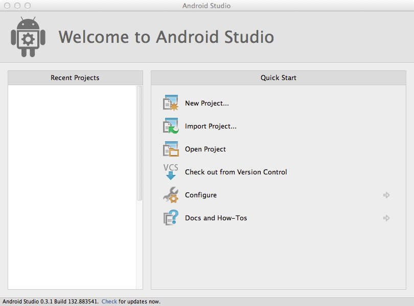
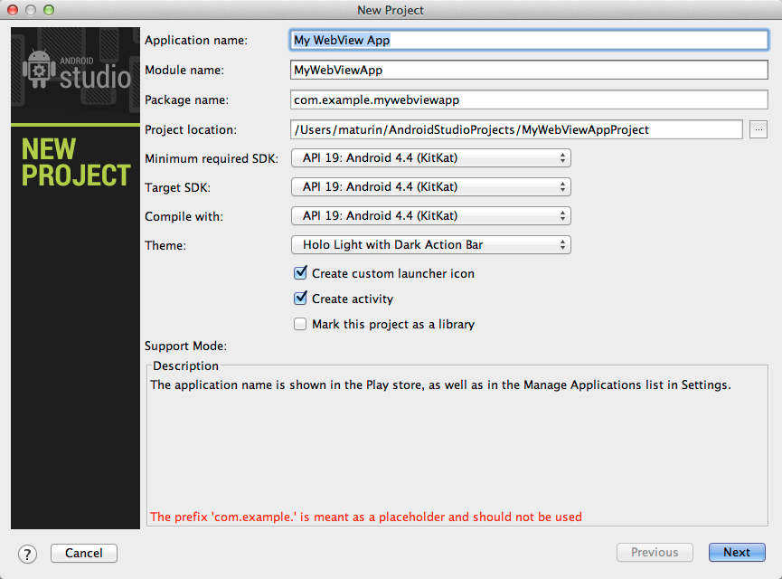
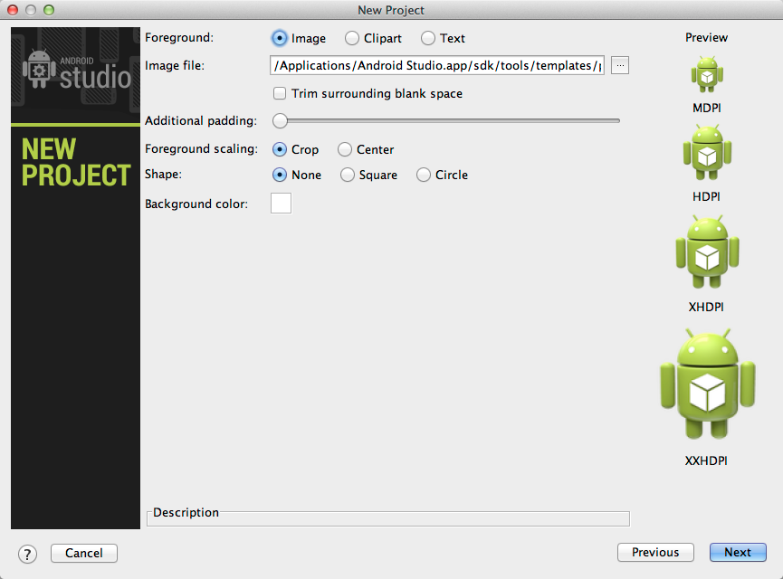
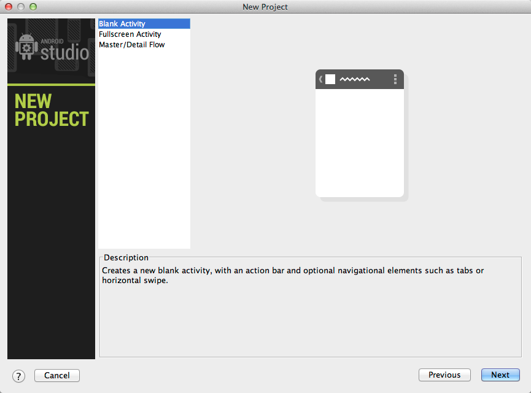
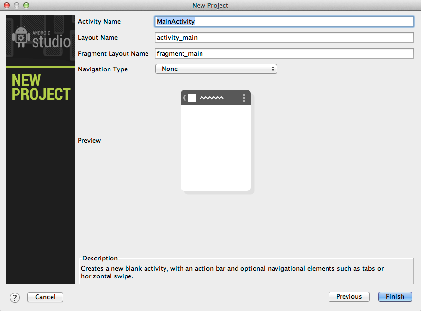
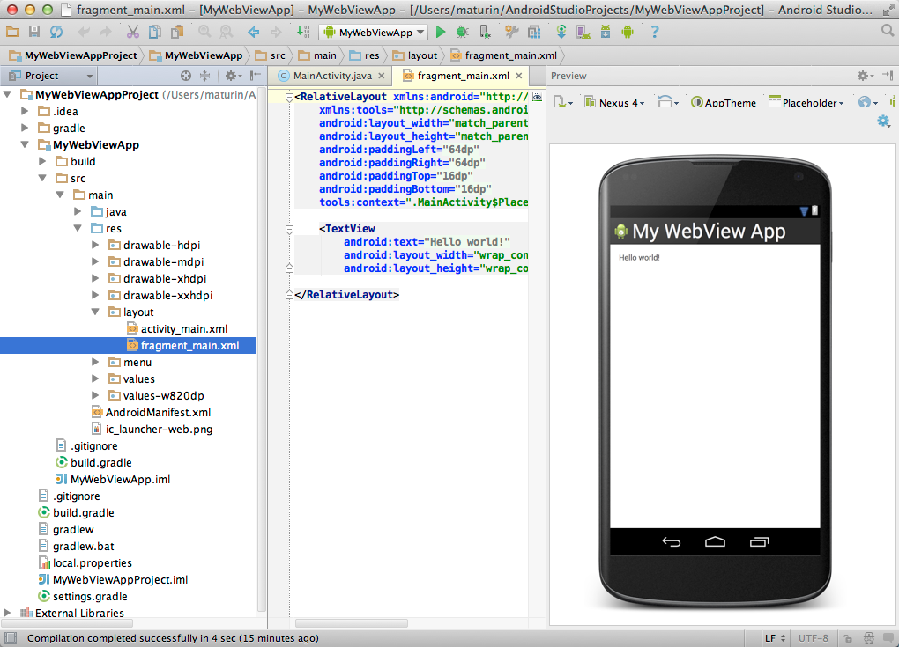
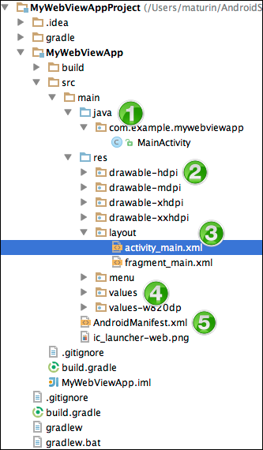
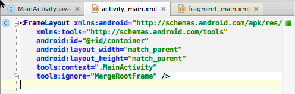

Getting started with the Android WebView is fairly simple, whether you want load a remote URL or display pages stored in your app.
This tutorial walks you through creating a new Android Project, adding a WebView, loading a remote URL and then loading a local HTML page.
Note: This tutorial assumes you're a developer with limited or no experience with the Android development environment, but have some experience with Java. If you're already familiar with programming for Android, you may want to refer to to Building Web Apps in WebView on the Android developer site instead.
This tutorial uses Android Studio, the new design-and-build IDE for Android. So you'll need start off by installing Android Studio, as described here:
http://developer.android.com/sdk/installing/studio.html
When the installation completes, Android Studio launches and displays the welcome screen.

To create a new project:
On the next page, enter your application name, package name and target SDKs, and click Next.

On the next page, you're prompted to enter an application icon. (You can change the icon later, so don't worry if you don't have one right now.) When you're done, click Next.

The next page lets you select the main Android activity for your application. For the purposes of this guide, select Blank Activity **and click **Next.

The next page lets you change the names for the default Activity and layout. Click Finish to accept the defaults and create the project.

You now have a new Android project. Next, to add the WebView!

Android Studio will give you some boilerplate code to set up your application. Your project's structure should look something like this:

A few of the more import folders are identified in the picture:
src/main/java. Android Java source code.src/main/res. Resources used by the native application.src/main/res/drawable-type. Image resources used by the native
application.src/main/res/layout. XML layout files that define the structure of UI
components.src/main/res/values. Dimensions, strings, and other values that you might not want
to hard-code in your application.src/main/AndroidManifest.xml. The manifest file defines what's included in the
application: activities, permissions, themes, and so on.You need to add a WebView to the main activity's layout.
Open the activity_main.xml file in the src/main/res/layout directory if it
is not already open. (You may also see a fragment_main.xml file. You can ignore this,
as it's not required for this tutorial.)
Select the Text tab at the bottom of the of the activity_main.xml editor to see
the XML markup.

This file defines the layout for your main activity, and the Preview panes show the a preview of the activity. The Blank Activity layout doesn't include any children. You'll need to add the WebView.
In the XML pane, remove the self-closing slash from the end of the FrameLayout element,
and add the <WebView> element and a new closing tag, as shown:
<FrameLayout xmlns:android="http://schemas.android.com/apk/res/android"
xmlns:tools="http://schemas.android.com/tools"
android:id="@+id/container"
android:layout_width="match_parent"
android:layout_height="match_parent"
tools:context=".MainActivity">
tools:ignore="MergeRootFrame">
<WebView
android:id="@+id/activity_main_webview"
android:layout_width="match_parent"
android:layout_height="match_parent" />
</FrameLayout>To use the WebView you need to reference it in the Activity. Open the Java
source file for the main activity, MainActivity.java in the
src/main/java/<PackageName> directory.
Add the lines shown in bold.
public class MainActivity extends Activity {
private WebView mWebView;
@Override
protected void onCreate(Bundle savedInstanceState) {
super.onCreate(savedInstanceState);
setContentView(R.layout.activity_main);
mWebView = (WebView) findViewById(R.id.activity_main_webview);
The existing code in the onCreate method does the work of hooking up the
Activity with the layout. The added lines create a new member variable,
mWebView, to refer to the web view.
Remove the following code:
if (savedInstanceState == null) {
getSupportFragmentManager().beginTransaction()
.add(R.id.container, new PlaceholderFragment())
.commit();
}
The WebView is identified by the resource ID, which is specified by this line in the layout file:
android:id="@+id/activity_main_webview"
After adding the code, you'll see some warning messages in the margin of the editor.
This is because you haven't imported the right classes for WebView. Luckily Android Studio can
help you fill in the missing classes. The easiest way to do
this is click and hover over an unknown class name and wait for a popup
showing a "quick fix" -- in this case,
adding an import statment for the WebView class.
Press Alt + Enter (Option + Enter on Mac) to accept the quick fix.
WebView in hand you can move on to setting it up and and loading some juicy web content.
WebViews don't allow JavaScript by default. To run a web application in the web
view, you need to explicitly enable JavaScript by adding the following lines to
the onCreate method:
// Enable Javascript WebSettings webSettings = mWebView.getSettings(); webSettings.setJavaScriptEnabled(true);
If you're going to load data from a remote URL, your application needs permission to access the internet. This permission needs to be added in the application's manifest file.
Open the AndroidManifest.xml file in the src/res directory. Add the line
in bold before the closing </manifest> tag.
<?xml version="1.0" encoding="utf-8"?>
<manifest ...>
...
</application>
<uses-permission android:name="android.permission.INTERNET" />
</manifest>
The next step is to call the loadUrl method on the webview. Add the following
line to the end of the onCreate method.
mWebView.loadUrl("http://beta.html5test.com/");
Now try running the project. If you don't have a device handy, you can create an emulator (AVD or Android Virtual Device) by going to Tools > Android > AVD Manager.
Note: To detect when a URL has started and finished loading,
use
WebViewClient.onPageStarted and
WebViewClient.onPageFinished.
Now try changing the URL you're loading to http://www.html5rocks.com/ and rerun your application.
You'll notice something strange.
If you run the application now with a site that has a redirect like html5rocks.com,
your app ends up opening the site in a browser on
the device, not in your WebView -- probably not what you expected. This is
because of the way the WebView handles navigation events.
Here's the sequence of events:
http:// URL
scheme -- that is, the user's default browser. If you have more than one browser installed,
you may see a dialog at this point.If you're using a WebView inside an Android application to display some simple web content (for example, a help page), this may be exactly what you want to do. However, for more sophisticated applications, you may want to handle the navigation links yourself.
To handle navigation inside the WebView you need to override the WebView's WebViewClient,
which handles various events generated by the WebView. You can use it to
control how the WebView handles link clicks and page redirects.
The default implementation of WebViewClient makes any URL open in the WebView:
// Force links and redirects to open in the WebView instead of in a browser mWebView.setWebViewClient(new WebViewClient());
This is a good step forward, but what if you want to handle links for your site only, while opening other URLs in a browser?
To achieve this you need to extend the `WebViewClient` class and implement the `shouldOverrideUrlLoading` method. This method is called whenever the WebView tries to navigate to a different URL. If it returns false, the WebView opens the URL itself. (The default implementation _always_ returns false, which is why it works in the previous example.)
Create a new class:
In the new `MyAppWebViewClient.java` file, add the following code (changes shown in bold):
public class MyAppWebViewClient extends WebViewClient {
@Override
public boolean shouldOverrideUrlLoading(WebView view, String url) {
if(Uri.parse(url).getHost().endsWith("html5rocks.com")) {
return false;
}
Intent intent = new Intent(Intent.ACTION_VIEW, Uri.parse(url));
view.getContext().startActivity(intent);
return true;
}
}
The new code defines `MyAppWebViewClient` as a subclass of `WebViewClient` and
implements the shouldOverrideUrlLoading method.
The `shouldOverrideUrlLoading` method is called whenever the WebView is about to load a URL. This implementation checks for the String "html5rocks.com" at the end of the host name of the URL. If the string exists, the method returns false, which tells the platform **not** to override the URL, but to load it in the WebView.
For any other hostname, the method makes a request to the system to open the URL. It does this by creating a new Android [Intent](http://developer.android.com/reference/android/content/Intent.html) and using it to launch a new activity. Returning true at the end of the method prevents the URL from being loaded into the WebView.
To use your new custom [WebViewClient](http://developer.android.com/reference/android/webkit/WebViewClient.html), add the following lines to your `MainActivity` class:
// Stop local links and redirects from opening in browser instead of WebView
mWebView.setWebViewClient(new MyAppWebViewClient());
Now, a user can click any of the HTML5Rocks links and stay within the app, but links to external sites are opened in a browser.
As you start playing around and navigating the awesome HTML5Rocks articles, hitting the back button on Android exits the application, even though we've explored a few pages of the site.
WebView has a method `canGoBack` which tells you if there is anything on the page stack that can be popped. All you need to do is detect a back button press and determine if you should step back through the WebView's history or allow the platform to determine the correct behaviour. Inside your MainActivity class, add the following method (in bold):
public class MainActivity extends Activity {
private WebView mWebView;
@Override
protected void onCreate(Bundle savedInstanceState) {
...
}
@Override
public void onBackPressed() {
if(mWebView.canGoBack()) {
mWebView.goBack();
} else {
super.onBackPressed();
}
}
@Override
public boolean onCreateOptionsMenu(Menu menu) {
...
}
}
A big advantage of using a WebView inside an installable application is that you can store assets inside the app. This lets your app work offline and improves load times, since the WebView can retrieve assets directly from the local file system.
To store files such as HTML, JavaScript, and CSS locally, put them in the assets directory. This is a reserved directory that Android uses for raw files that your app may need access to (i.e. files it knows it should minimise or compress).
In your project, create the assets directory in main (src/main/assets).
Generally it's good practice to keep your web files in a subdirectory, so create a www directory and put all your web content in it.
Note:It's worth noting that absolute paths do not work in the WebView when referring to other files, such as CSS and JavaScript. So make sure you make all references relative, instead of absolute (for example, instead of "/pages/somelink.html", use "./pages/somelink.html").
Once you have everything in your assets directory, it's as simple as loading in the appropriate file:
mWebView.loadUrl("file:///android_asset/www/index.html");
You'll want to tweak the shouldOverrideUrlLoading method so it opens a browser
for non-local pages:
public class MyAppWebViewClient extends WebViewClient {
@Override
public boolean shouldOverrideUrlLoading(WebView view, String url) {
if(Uri.parse(url).getHost().length() == 0) {
return false;
}
Intent intent = new Intent(Intent.ACTION_VIEW, Uri.parse(url));
view.getContext().startActivity(intent);
return true;
}
}
Now you are set to build a great WebView app!
For tips on getting the visuals just right, see Pixel-Perfect UI in the WebView.
If you run into trouble, the Chrome DevTools are your friends. See Remote Debugging on Android to get started.